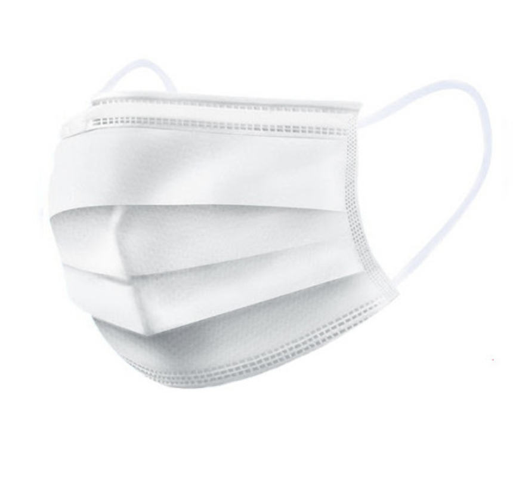
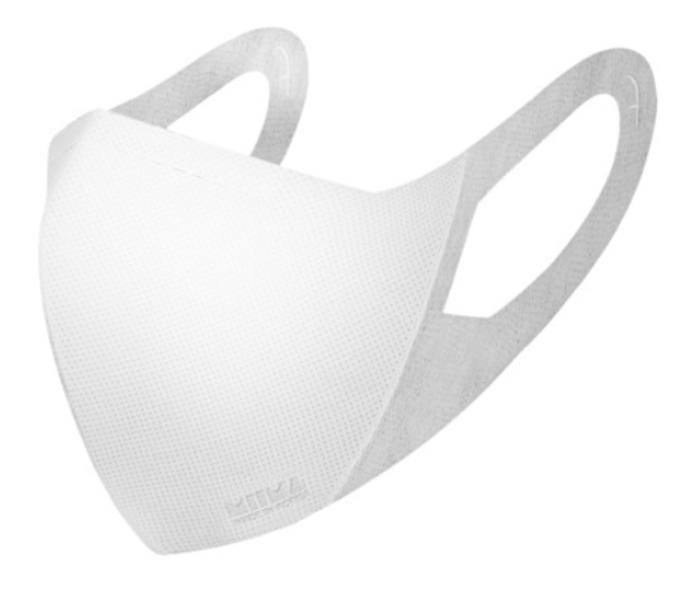
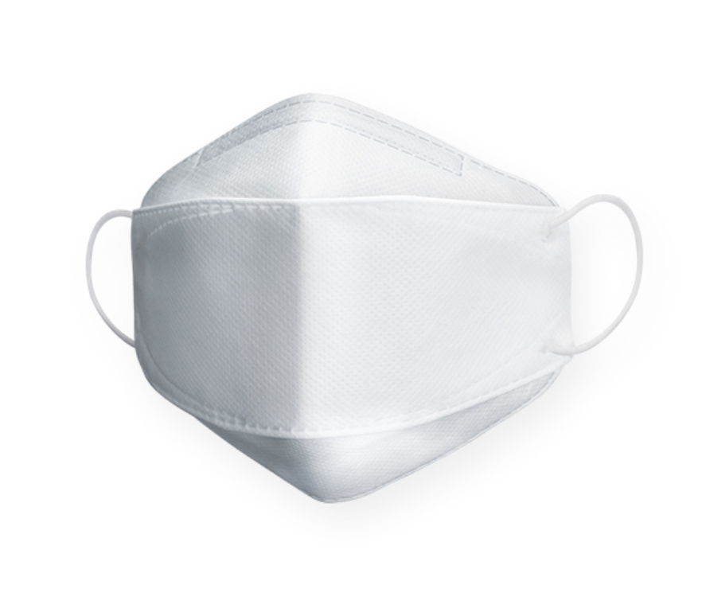

マスクの観察
どのようなことに焦点をしたのか？
- 男女、年齢、付け方、色、形など
- 観察場所：韓国の公園とカフェの周辺
マスクの形
- 多くの人々が不織布マスクを着用
- ウレタンマスクを着用する人も結構いる。
→ウレタンマスクは年齢問わず男性も女性も着用
- 色々なマスクの形があるが、大体三つに分けられている。



マスクの色
- 男女を問わず、白いマスクを着用する人が多い。
- 黒いマスクを着用した人もいたが、白いマスクの方が極めて多い。
- ピンク、青、グレー、ベージュなどの色のマスクを着用した人も結構いる。
- ピンクやベージュの色は女性の方が多いが、グレーや青の色は男性も女性も着用。
- グラデーション色のマスクを着用した女性もいた。
マスクの付け方
- マスクのアクセサリーを加えた人も多い。
- マスクストラップを使ったりマスクケースを持っている人も結構いる。
- マスクストラップは男性も女性も使うが、マスクケースは年齢が高い女性がよく持っている。
- 老人や数名の人が鼻出しでマスクを着用し、道を歩いたりするが、未着用した人は見つけられなかった。